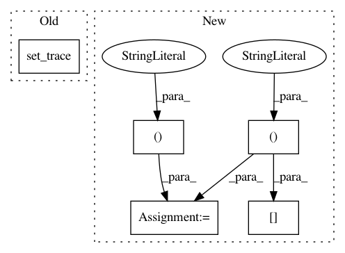

688aa83baf45b285cbdace7cf641da91a111c5ad,src/models.py,MultiTaskModel,_lm_forward,#MultiTaskModel#Any#Any#,403
Before Change
logits_bwd = hid2voc(bwd[:,1:,:]).view(b_size * seq_len, -1)
logits = torch.cat([logits_fwd, logits_bwd], dim=0).view(2 * b_size * seq_len, -1)
out["logits"] = logits
pdb.set_trace()
if "trg_fwd" in batch:
targs = torch.cat([batch["trg_fwd"]["words"].view(-1),
batch["trg_bwd"]["words"].view(-1)])
After Change
sent, mask = self.sent_encoder(batch["input"])
sent = sent.masked_fill(1 - mask.byte(), 0) // avoid NaNs
split = int(self.sent_encoder.output_dim / 2)
fwd, bwd = sent[:, :, :split], sent[:, :, split:]
hid2voc = getattr(self, "%s_hid2voc" % task.name)
logits_fwd = hid2voc(fwd[:,:-1,:]).view(b_size * seq_len, -1)
logits_bwd = hid2voc(bwd[:,1:,:]).view(b_size * seq_len, -1)
In pattern: SUPERPATTERN
Frequency: 3
Non-data size: 5
Instances
Project Name: jsalt18-sentence-repl/jiant
Commit Name: 688aa83baf45b285cbdace7cf641da91a111c5ad
Time: 2018-06-24
Author: wang.alex.c@gmail.com
File Name: src/models.py
Class Name: MultiTaskModel
Method Name: _lm_forward
Project Name: arraiy/torchgeometry
Commit Name: 33dcc8554a6a187ee33762b1e572a252aa65e698
Time: 2018-09-26
Author: edgar.riba@gmail.com
File Name: test/test_depth_warper.py
Class Name: Tester
Method Name: test_depth_warper
Project Name: kbardool/keras-frcnn
Commit Name: c6e4eaf7ad9a27a9c91d29f02048b1e6b1a8b657
Time: 2017-02-13
Author: yannhenon@gmail.com
File Name: keras_frcnn/data_generators.py
Class Name:
Method Name: calcY